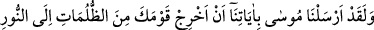
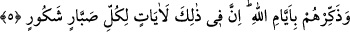

Tâlib-i tevhîd olana ayağını “Lâ” üzerine vurmak gerek,
Ondan sonra da vahdet âleminde “illâ” diye nefesini vurmak.
Hakîkat âleminden renk ve koku elde ettiysen,
Aşk sahrâsı üzerine yüz yapraklı gül gibi çadır kurmak
Ağyârın Allah’ın eserlerini görmekten alıkonması, ancak Aziz ve Kahhâr olan
Allah’ın gayretinden/kıskanmasından ileri gelmektedir.
Mâşûk senin üzerinden dâimâ ıyân ve âşikâre geçer, lâkin
Ağyâr onun cemâlini göremez çünki yüzünde örtü vardır
Tevhid ile hâsıl olan vahdetin mânâsı, ikilik (isneyniyyet) vehminde olan mecâzî
vücûdun/varlığın yok olması ve hakîkî vücûdun/varlığın olduğu gibi ortaya çıkmasıdır.
Bu okyanusun her dalgası ‘Deniz benim’ diye kıyıya vurur
Yüz bin kimse el kaldırıp avuç açsa da duâ birdir
Allah bizi ve sizi tevhîdin hakîkatlerine erdirsin, bizi ve sizi tecrîd ve tefrîdin sırrına
ulaştırsın, bizi hem doğru yola iletilmiş; hem de doğru yola iletenlerden, Hakk’ın yoluna
dâvet edenlerden kılsın.
5. Andolsun ki Mûsâ’yı da: ‘Kavmini karanlıklardan aydınlığa çıkar ve onlara
Allah’ın (geçmiş kavimlerin başına getirdiği felâket) günlerini hatırlat’ diye
âyetlerimizle gönderdik. Şüphesiz ki bunda çok sabreden, çok şükreden herkes için
âyetler vardır.
“Andolsun ki Mûsâ’yı da: ‘Kavmini karanlıklardan” küfür, cehâlet, şüphe ve
benzerleri gibi tam bir karanlık olan sapıklık çeşitlerinden îmân, ilim, yakîn ve benzeri
olan “aydınlığa” hidâyete “çıkar ve onlara Allah’ın günlerini hatırlat’ diye
âyetlerimizle” yâni onun gerçek bir peygamber olduğuna delâlet eden başta eli ve asâsı
olmak üzere diğer mûcizelerle “birlikte gönderdik.”
Ebüssuûd Efendi der ki: “Burada zikredilen “âyetler”, Mûsâ (a.s.)’ın
İsrailoğulları’na gösterdiği mûcizelerdir. Kasdedilen ise Fir’avn’un helâk edilmesinden
sonra İsrailoğulları’nın kendilerini: “Ey Mûsâ, onların ilâhları olduğu gibi sen de
bize bir ilâh yap.” (el-A‘râf, 7/138) demeye sevk eden küfür ve cehâletten Allah’a
inanmaya, O’nu tek kabûl etmeye ve emrolundukları diğer görevlere îmân etmeye